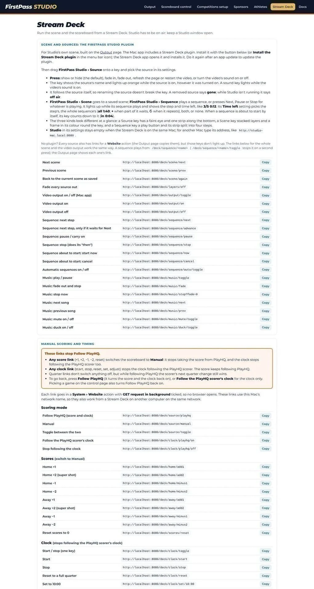
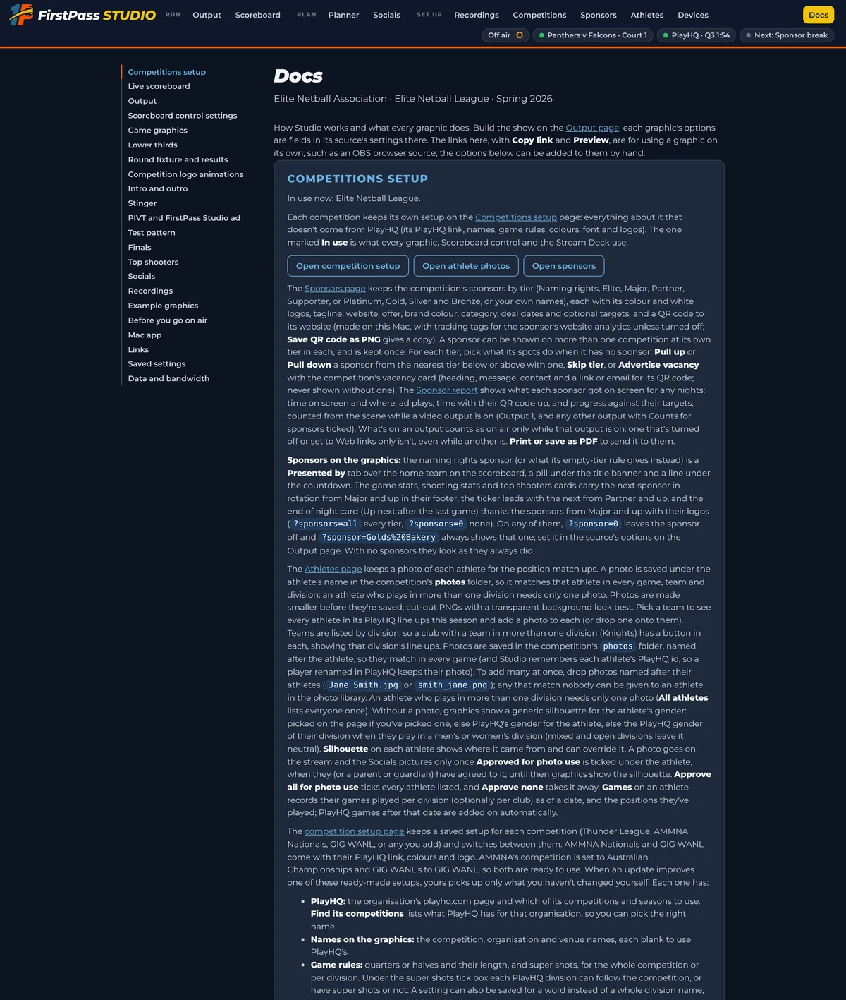

What Studio is
FirstPass Studio is a Mac app that draws broadcast graphics for a netball livestream and sends them to your vision switcher. The scores, clocks, ladders, fixtures and line-ups come from PlayHQ's public data, so there is nothing to type in during the game.
Studio does one job on stream night: graphics. Your cameras, switcher and streaming encoder stay as they are. Studio hands the switcher a picture with transparency (fill and key, or a chroma colour) so the graphics sit over the vision.
The words used in this guide
- Studio
- The whole thing: the Mac app, the pages you work in, and the graphics it puts on screen.
- On air, off air
- Studio is on air while a Studio window is open. On air it talks to PlayHQ, serves the graphics and answers the Stream Deck. Closing the last window takes it off air.
- A graphic, or a page
- One thing that can go on screen: the scoreboard, a ladder, a lower third, an animation. Each is a web page that Studio draws.
- A source
- A graphic placed in the scene, with its own position, options and fade. The scoreboard is one source; a ladder is another.
- The scene
- Studio's own 1920 × 1080 frame, built from sources switched on and off. It is what the switcher receives.
- A scene (on the Scenes list)
- A saved look: which sources are on and which are off. "Live game" and "Clear" are scenes.
- A sequence
- A list of steps played in order from one press: a run-up, a quarter-time break, a full-time wrap.
- The competition
- Everything that belongs to one league: its PlayHQ link, names, rules, colours, logos, sponsors and athletes. Studio keeps a setup per competition and uses one at a time.
- The data folder
- Where Studio saves everything, outside the app, so updates never touch it.
The pages you work in
Every Studio window has the same tab bar: Output, Scoreboard control, Competitions setup, Sponsors, Athletes, Stream Deck and Docs (⌘1 to ⌘7 in the app). Output is where the show is built and sent out; Scoreboard control runs the board; the rest are set up before the night.
The sample competition in this guide
The screenshots use a fictional league, the Elite Netball League, with eight clubs named after animals (Falcons, Panthers, Stingrays, Cobras, Grizzlies, Hawks, Rhinos and Wolves) across Premier, Men's and Under 21 divisions, playing at the Metro Arena. Its sponsors are fictional too. Everything you see is what Studio draws for any competition once its setup is in.
Getting started
Install the app, import or make your competition, and learn the one rule that matters on stream night: keep a Studio window open.
Install
- Download
FirstPass Studio.dmg, drag the app to Applications and open it. It runs on Apple silicon Macs (M1 and later). - The 1P icon appears in the menu bar, off air. Choose Open Studio. A short splash shows, Studio goes on air and the Output page opens in the app's own window.
- Go to Competitions setup and either Import a template file (your league's
.json, with its logos and sponsors inside) or New competition and fill it in (Chapter 6). - Back on Output, add the graphics you need with Add page, and turn on the video output that feeds your switcher (Chapter 3).
On air and off air
Studio only runs while a Studio window is open. Opening one (Open Studio, any page in the 1P menu, or ⌘N) puts it on air; closing the last one takes it off air, and the graphics and Stream Deck get no answer until a window opens again. Closing the last window while on air asks first, and so does ⌘Q, so a stray keypress can't stop a stream. Leave the Output page open all night.
The status line under the Output page's title shows the game on the board, whether scores and clock follow PlayHQ, how long since PlayHQ last answered (amber when overdue, red after a minute of errors) and whether the video output is on. If anything is wrong, this line says so on the page you keep open.
The 1P menu
Open Studio, Scoreboard control, Competition setup, Copy the Studio link, Install the Stream Deck plugin, Back up… and Restore…, Settings folder (iCloud Drive), Open the settings folder, Open the debug log, Restart Studio, Open at login, Let other devices change things, What's new…, Check for updates, Stop Studio (while on air) and Quit. Updates download in the background and install when the app quits, never mid-stream; Restart to update installs one straight away.
Studio's links start with the Mac's Bonjour name, such as http://matts-macbook-pro.local:8080/, so the same link works from a phone, another computer or a Stream Deck on the same network. http://localhost:8080 works on the Mac itself.
Before you go on air
- Open the app. The Output page opens and Studio goes on air. Keep a window open all night.
- Right competition. Competitions setup shows the one in use at the top. Check its PlayHQ link, the court to follow and the scoring window.
- Right game. On Scoreboard control, the picked game is tonight's first on your court and Follow PlayHQ is on.
- Scores arrive. Once the scorer has started on PlayHQ, the control page says the game is being live scored and the board moves. Nothing is read before the scoring window opens, so a quiet board before then is normal.
- Scene and output. On Output, turn on the display, NDI or Blackmagic output your switcher takes, check fill and key or chroma, and show one graphic to see it land.
- Sound. Play a few seconds of music and an animation with sound, and check the sound only comes out where you want it.
- Stream Deck. Press a Source key and watch the Sources list follow it. A score key switches scoring to Manual, so put it back to Follow PlayHQ after testing.
- Sponsors. Tonight's spots and ads are on; the sponsor report starts counting when the output turns on.
Game night, the automated way
This is how most nights run: one operator, PlayHQ scoring the game, a base scene that stays on, automatic layers that fire by themselves, and sequences that handle the run-up, the breaks and full time.
How it fits together
Four things do the work, and each one is set up once:
- Follow PlayHQ. The scoreboard reads the live score, quarter and clock from the same feed the PlayHQ game page uses, every 5 seconds by default (as often as every second), while someone live-scores the game on PlayHQ. Automatic game selection moves the board to each next game on your court as its electronic scoring starts.
- The base scene. A saved scene with the sources that stay on through the game: the scoreboard, the title banner, the branding logos and the score ticker.
- Automatic layers. Sources that stay on but only show when something happens: the super shot celebration, the hot streaks and game moments, the super shot tab on the scoreboard, the naming-rights sponsor's tab. They watch the board and play by themselves.
- Sequences. Steps played in order for the parts of the night that aren't live play: the run-up, the walk out, quarter and half time, full time and the close. A sequence can start by itself from the game's clock, carry music, and hand over to another sequence.

Scoreboard control

Always a game on
When Studio starts, it puts a game on the board with Follow PlayHQ on: the game on now on your court, otherwise the first game of this round on that court. The round is picked by date (the round played in the next 5 days, counting today), so a Tuesday round is found from the Friday before. You can force a round from the Round list; its games on your court are then followed by their own date and time (the one due now, otherwise the next to come). Set it back to Automatic afterwards.
Automatic game selection
With Pick the game automatically for court ticked, the board shows the first game of the night on that court, then switches to each next game when its electronic scoring starts (Electronic scoring starts N minutes before the game on the setup page, 10 by default, 15 in the sample league), with the quarter back to Q1 and a full clock. In finals it keeps the final on until PlayHQ marks it finished, in case of extra time. Picking a game from the list by hand turns automatic selection off; tick it again to go back.
Follow PlayHQ
With Follow PlayHQ on, the score and quarter update every 5 seconds from PlayHQ's live scoring, and Follow the PlayHQ scorer's clock runs the clock from the scorer's clock. The clock matches the scores: switching to Manual, or pressing any score button, turns clock-following off as well, and the control page says so. Press a clock button to run the clock by hand while scores still follow PlayHQ. To line the clock up with the venue, type the venue's time in Match venue clock.
Studio doesn't ask PlayHQ's live feed for a game until its electronic scoring window opens, whether the game was picked automatically or by hand. The control page says when it will start checking.
The Output page
The Output page builds Studio's own scene: sources drawn as layers on one 1920 × 1080 frame, top layer first, and sends it to a display, a Blackmagic device or NDI for your switcher.
Sources
Add page adds any Studio graphic (or any web address), Add image a PNG, JPG, GIF, WebP or SVG, and Add video an MP4, WebM or MOV. A new source goes in hidden and selected, so its settings are ready to change. Drag a source up or down the list to move it between layers. Add all unused pages puts every Studio graphic in the scene at once, hidden.

Source settings
Select a source to change it. A graphic's link options (position, heading, division, round, animate away and so on) show as fields under its address, so there is nothing to look up. On / Off fades it in or out over its own Fade time (0 is a cut). Position and scale place it on the frame. Load the page fresh each time it's shown (on by default) reloads a page as it fades in so its animation replays; untick it to keep a page running so it shows instantly. Preview (and the small PVW button) opens the source on its own, half size, on a checkerboard.

Videos play from the beginning each time they're shown, can loop, and fade out when they finish unless looping; a video that fades out switches its source off, so its key goes dark and the next On plays it again. A ProRes 4444 .mov is converted to a transparent WebM when it is added, keeping its alpha. Export sources saves the whole scene with its media as one zip to keep or move to another Mac; Import sources puts one back.
The base scene
The base scene is what viewers see for most of the game. In the sample league it is the Live game scene: the scoreboard at the bottom, the title banner at the top with the PIVT and FirstPass Studio logos on the left and the competition logo on the right, and the score ticker along the bottom edge with the other courts' scores.

- Scoreboard. Court in a pink box on the left, both teams in their club colours, the score at screen centre, quarter and clock on the right. "PlayHQ live" shows while scores follow PlayHQ; a "Presented by" tab carries the naming-rights sponsor.
- Title. Round, competition and venue, with the naming-rights sponsor's pill under it.
- Branding logos. PIVT and FirstPass Studio left of the title, the competition logo right of it, so other graphics can be turned on and off around them.
- Score ticker. Scrolling scores from the other games this round, led by a Partner-and-up sponsor's tagline. Its speed is set on the control page or from the Stream Deck.
Build it once: turn those sources on, then press Save what's on now under Scenes and name it. From then on, one click (or one Stream Deck key) brings the show back to this look.
Automatic layers
These sources are left on in the base scene and play by themselves from the scoreboard. They add no PlayHQ requests of their own; they ask Studio, which already has the score.


Each celebration can carry a sponsor's "Brought to you by" tag (Chapter 7). A division without super shots plays no super shot animation and counts no super goals; that is set on the competition setup page, per division if needed.
Scenes
A scene is a saved set of sources on and off. Clicking a scene goes to it, turning sources on and off to match while anything already on stays on, not reloaded. Scenes are listed by colour in the order of a stream: green pre-game, blue live, purple quarter time, grey post-game, yellow ads.

Turn a source on or off by hand after going to a scene and the scene is marked changed; the bar under the scenes offers Back to saved, Save over it, or Save as new scene. Edit scenes shows a grid, sources down and scenes across, to set each one On, Off or Leave, rename, colour, copy or delete scenes without changing what's on. A source added later is off in every scene.

Tick Quiet the music when this starts on a scene for an interview on court: whatever music is playing ducks and keeps playing until the next scene or sequence without the tick.
Sequences
A sequence plays the scene's sources one after another. Each step turns on the sources you pick and stays for a set time, until it finishes (its videos end or its animation animates away), until the game moves on (the clock starts, or the next break or full time), or until you press Next. As a step ends, sources the next step doesn't use go off with their own fades.

Three kinds of step
- Sources (+ Add sources): one or more sources on together, for a length.
- A scene (+ Add scene): a starting point or a reset point. What the scene turns on stays on under the next steps and after the sequence. Start a break sequence with the Live game scene and the scoreboard stays up under the stats.
- Another sequence (+ Add sequence): its steps play in place. Build a mini sequence once (the sample league's Break stats and Sponsor break) and use it inside Quarter time, Half time and Full time. A sequence made only of sequences is marked Master. Tick Hide on a mini sequence to keep it off the list; it still plays inside the others and from the Stream Deck.
+ Add sponsor ads adds a step that plays the next one to five sponsor ads in rotation (Chapter 7).

When a sequence starts, repeats and ends
| Setting | Choices | Used for |
|---|---|---|
| Starts | By hand · N minutes before the picked game's start (only if Studio was running then; opened later, play it by hand) · at the breaks you tick (QT, HT, 3QT) · at full time, a few seconds after the siren | Run-up 15 minutes out; the breaks and full time from the scoreboard's clock (the PlayHQ scorer's or yours). |
| Repeat | Play once · until stopped · until play resumes · until N minutes before the start | A break sequence loops until the clock starts again, finishing the step on screen. |
| Then | Go to a scene · turn off what it turned on · leave everything · play another sequence | Breaks go back to Live game; Run-up hands over to Walk out. |
| Music | None · a song or playlist from a step, from a start mark, with a fade in; ends by fading, cutting or carrying on into the next sequence | Warm-up music through the run-up that carries into the walk out. |
A sequence that starts by itself waits a few seconds as Starting, with Start now and Cancel: press Cancel to hold the break back for a shot after the siren and start it by hand when the ball is dead, or Stop (or a scene) to come back from a break early. Automatic sequences on above the cards is the one switch for all of that, and it is remembered. Only one sequence plays at a time; going to a scene, playing another sequence or hiding everything stops it without its Then. A sequence only ever turns off sources it turned on itself.

Sequences belong to the competition in use and change with Use this one; the sources and scenes are shared. The break lengths on the setup page (quarter time, half time, three quarter time) let the editor say how many times a break sequence fits in each break.
Music and playlists

The Music player plays songs from the media folder (MP3, M4A, AAC, WAV or AIFF; use music you're licensed to stream), one song or a playlist, shuffled or not. Add a song with Even out its loudness ticked and it is levelled to match the others. Music plays wherever the video sound plays: through the output, or in the Scene View while Video output is off, never twice.
- Play fades in; Pause and Stop fade out (slower by default). Duck dips it low and keeps it running; Mute keeps it running silently.
- While a video with its sound on plays, the music fades out and pauses, then fades back in from where it was (or lowers, or carries on: a setting). A themed intro or outro does the same.
- A sequence can bring its own music, and a sequence inside it plays its own while it runs. Going to a scene fades a sequence's music out.
- The super shot song cuts in when the super shot period starts in a super shot division, loops, and fades out when the period ends.

Video output
The Video output section at the top of the Output page sends the scene to your switcher. Pick one of three routes, then press Output on. While the output is on its settings are locked; turn it off to change them. /deck/output/on, off and toggle do the same from a Stream Deck, and the outputs go dark when Studio goes off air.
| Route | What it needs | What the switcher gets |
|---|---|---|
| Display | One or two extra displays on the Mac (HDMI into the switcher), set to exactly 1920 × 1080, not HiDPI or scaled | Chroma: the scene over a solid colour on one display (green by default, blue or any colour). Fill and key: fill on one display, key (white where the scene shows) on the other. A plain M1 drives one extra display; Pro and Max chips drive more. |
| Blackmagic | An UltraStudio or DeckLink with Blackmagic Desktop Video installed, and the device free | Fill and key through the device's external keyer (fill on one SDI out, key on the other), or fill only, at the switcher's 1080p format (1080p50 is picked first). The fill is premultiplied: turn the switcher's Pre Multiplied Key on for clean edges. |
| NDI® | NDI's free runtime for Mac, and a wired network | Fill and key as two sources, chroma as one, or one source with transparency for receivers that key on NDI's alpha. They appear as this Mac's name with the source name in brackets. |
More than one output
One output is all most nights need. To give a camera its own graphics, press Add an output beside Output on (up to four). Each output is its own picture with its own route and its own on/off, so a second output can feed an upstream keyer tied to a camera and its graphics cut with that camera, while Output 1 stays the downstream key over everything. Name an output in its card ("Wide camera", say) and that name is used everywhere, including its Stream Deck links.
- Sources are shared, on/off is per output. Each source in the list has a coloured pill per output (orange, pink, aqua, yellow for Outputs 1 to 4). Press a pill to show or hide that source on that output only. A new output starts with everything off. The Show filter above the list narrows it to one output.
- Output 1 is the primary. It carries all the sound and music; the other outputs are graphics only and always silent. Scenes and sequences act on Output 1.
- The Scene View has a tab per output, coloured to match, so you can check what each one is sending.
- Routes can't be shared. Two outputs can't use the same display, the Blackmagic device or the same NDI name; the earlier output keeps it and the later one says so on its card. Two HDMI displays give either two chroma outputs or one fill and key output. Several NDI outputs can run at once, each with its own name, which suits feeding a switcher's inputs over the network.
- Stream Deck.
/deck/output/2/toggle(or the output's name) turns Output 2 on or off,/deck/output/all/offturns them all off, and/deck/output/2/layer/<source>/toggleshows or hides a source on Output 2. Source settings lists these links for each output.
Every extra output runs its pages once more on the Mac. Try the number of outputs you plan to use on your own Mac before a stream night.
Sound plays through the Mac's audio output on every route, from Output 1 only. The Scene View on the Output page shows the scene as it is right now, on a checkerboard so see-through parts show; Pop out opens it in its own window to move to another screen, with a floating list of On/Off buttons. The Scene View plays sound only while Video output is off, so it never plays twice.


A chroma key cuts out one colour, so anything half see-through fringes. With a chroma output picked, Chroma key safe is on: every graphic goes out with solid panels, no glows or soft shadows, and fades become cuts. Pick another output and everything is back as it was. The Output page also lists any competition or club colour close to the key colour.
A night, start to finish
With the sample league's scenes and sequences, a solo operator's evening looks like this. Everything in the right-hand column happens by itself.
- ArriveOpen the app. Studio goes on air, picks tonight's first game on Court 1 with Follow PlayHQ on. Turn the video output on and check the test pattern on the switcher.
- 15 min outRun-up starts by itself: the Pre-game scene, then the sponsor wall, match up and ladder in turn over the warm-up playlist, repeating until 2 minutes before the start.
- 2 min outRun-up hands over to Walk out: The Clash smashes the two logos together, the position match ups run through GS to GK, the countdown holds until the clock starts, then the Live game scene comes up and the music fades.
- Q1 to Q4The scoreboard follows the PlayHQ scorer's score, quarter and clock. Super shots, hot streaks and moments play by themselves. The super shot tab and song mark the last five minutes of each quarter. The operator watches the stream and, if they like, keys up a ladder lower third or a lower third for a commentator.
- Quarter timeQuarter time starts a few seconds after the siren: shooting stats, the last 10 goals and the ladder, then two sponsor ads and the sponsor card, over the break music, round and round until play resumes, then back to Live game.
- Half timeHalf time does the same with Up next and the ladder lower third added, and the house ad if no sponsor has one due.
- Full timeFull time starts after the final siren: the winner celebration, the full time card, game stats, the score worm, a sponsor break and Up next (which becomes the end-of-night card after the last game).
- Next gameAutomatic selection moves the board to the next game on Court 1 as its electronic scoring opens, with the quarter back to Q1 and a full clock. Run-up starts again 15 minutes out.
- ClosePress Stream close: the Clear scene, then the outro with the night's teams. Turn the output off. The sponsor report has the night's exposure ready to send.
Running it by hand
When nobody is live-scoring the game on PlayHQ, or PlayHQ stops answering mid-game, every automatic part of Chapter 3 has a button. The board, the breaks and the celebrations can all be driven from Scoreboard control and a Stream Deck.
Studio still needs the competition on PlayHQ for its fixture, ladder, squads and results; what changes in manual mode is who runs the score and the clock. The same competition can be followed one week and run by hand the next, and nothing on the Output page changes between the two.
Two people, not one
A followed game can be run by one person because the score, the clock and the breaks take care of themselves. A game run by hand is a different job: someone has to press a key for every goal within a second or two of it, start and stop the clock with the umpire's whistle, and still call the breaks and the graphics. We recommend two people share it:
Camera operator
- Frames and follows play on the cameras, and cuts between them on the switcher.
- Runs the game clock from the whistle, with Start / Stop and Reset clock keys beside the camera controls.
- Scores the goals as they go in, +1 or +2, because they are already watching the ring.
- Nothing else: no graphics, no breaks, no music.
Production manager
- Keeps the Output page open and watches the stream itself, not the court.
- Corrects the score (−1, −2) and the quarter, and sets the clock when it drifts from the venue's.
- Plays the run-up, break and full time sequences from their keys, and the lower thirds, ladders and stats during play.
- Runs the music, the sponsor ads and the end of night, and picks the finals winners.
If one person must do it alone, keep the Stream Deck to the score and clock keys and let the sequences do the breaks, exactly as they do in automated mode: the game triggers follow the scoreboard's clock whoever runs it.
Switching to manual
Press Manual on Scoreboard control, or just press any score key: either switches the board to manual scoring and stops following the PlayHQ clock as well. Press Follow PlayHQ to go back; the score catches up with PlayHQ on the next check and the clock follows the scorer's again.

If PlayHQ stops answering during a followed game, the scoreboard keeps its last score and the debug log records each failed read. Switch to Manual and run the board by hand; Follow PlayHQ picks it up again when PlayHQ is back, and corrects the score to the scorer's.
The score
Each team has +1, +2, −1 and −2. A +2 is a super shot: it scores two and plays the super shot celebration, so a +2 pressed by mistake is fixed with −2 (which plays nothing). Reset scores to 0 clears both. The hot streaks and game moments still play in manual mode, because Studio works out the goal order from the presses just as it does from PlayHQ's score.
| Key | What it does |
|---|---|
| Home +1 / Away +1 | A goal. |
| Home +2 / Away +2 | A super shot: two points and the celebration. |
| −1, −2 | Take a goal or a super shot back, quietly. |
| Reset scores to 0 | Both scores to zero, for the next game. |
| Super shot (home / away) | The celebration only, score unchanged: for a test, or a super shot that was scored as +1 +1. |
The clock and the quarter
Start and Stop are one key on the Stream Deck. Reset clock puts a full quarter back (the competition's quarter length; a key can set any time). +10 s and −10 s nudge it, and a key can add or take off any amount. Type the venue's clock in Match venue clock to line the two up, and untick Show clock for a game with no reliable clock at all. Quarters are Q1 to Q4 plus extra time, or H1 and H2 for a competition played in halves; Next quarter steps through them. Changing the quarter doesn't touch the clock, so make the quarter key a Stream Deck Multi Action that also resets the clock.

Breaks and celebrations by hand
A sequence that starts by itself at quarter time is started by its key too, so the production manager can run Quarter time the moment the siren goes instead of waiting for the clock, or run Half time early when a game is called. Next, Pause and Stop work on whatever is playing, and Automatic sequences on on the Output page can be unticked for a night where every break is called by hand.
- Winner. One key. The celebration reads the board's score when it comes on, so it covers a home win, an away win and a draw. Check the score first. A source with Result set to home, away or draw forces it.
- Super shot and streaks, once. Besides the automatic sources, a Super shot source set to Plays: home or away, or a Hot streaks source set to one streak, plays once each time it is turned on. Don't keep a manual source and the automatic one on together, or it plays twice.
- The Clash. A pre-game animation, played from its key or as a step in the walk-out sequence, with the two teams, their logos and club colours.
- Lower thirds. The person lower third's name box on the Output page suggests the competition's athletes; type a guest's name and title for a commentator or an official. Turn it on when they appear and off a few seconds later.
- Stats during play. The ladder lower third, shooting stats, last 10 goals and match up are all Source keys. Each loads fresh when shown, so it has the latest numbers.
Finals
PlayHQ often has no finals fixtures until the day. In Finals on Scoreboard control, pick the division, then pick each game's winner (the score is optional) as the finals are played; the finals graphic and the ladder's finals key move on with each pick. A result from PlayHQ, when it has one, always wins over one picked here.

The graphics
Every graphic Studio draws, grouped by when it is used. Each one is added to the scene with Add page on the Output page, and its options appear as fields under its address; the options named here are the ones worth knowing.
All of them follow the game, round and court picked on Scoreboard control, take the competition's colours, font and logos from its setup, and fit long team names. Cards sit in the space between the title and the scoreboard and shrink to fit when they have more in them than fits. Every page, with its link and a Preview button, is also listed on the Docs tab.
Always on


Before the game


During play


After the game


The competition


The breaks


Checking the outputs
Competitions setup
Everything about a competition that doesn't come from PlayHQ lives on one page: its PlayHQ link, the names on the graphics, the game rules, finals, game day, colours, font and logos. Set it up once a season and every graphic follows.
Studio keeps a setup per competition. The one marked In use is what every graphic, Scoreboard control, the Sponsors page and the Stream Deck use. Changes aren't kept until you press Save (or Save and use this competition), and leaving the page with unsaved changes asks first.

PlayHQ
Paste the address of the organisation's page on playhq.com and press Find its competitions; then pick the competition and the season. For a carnival or a league run under another body, use the organisation the competition is listed under. Nothing else about PlayHQ is needed: no account, no key.

Names on the graphics
The competition name on the title banner, the organisation name as the ladder's heading, and the venue for the title, fixture and Up next. PlayHQ's names are often long or formal; these are the ones viewers see.

Game rules
Quarters or halves and their length set the clock, the quarter buttons and the wording of the break cards. Super shots turns on the +2 scoring, the celebration, the super shot tab in the last minutes of each quarter and the Super columns on the shooting graphics; a division can have its own setting, by its name or by a word in it ("Open", "Men"). The break lengths let the sequence editor say how many loops of a break sequence fit in the break.

Finals
Pick the finals format for the competition, or per division: it decides the finals places the ladder marks (double chance or a week off, elimination, playing for third) and the bracket the finals graphic draws week by week. PlayHQ's finals games are used when it has them; otherwise the winners are picked on Scoreboard control.

Game day
The court Studio follows, whether it picks the game automatically, when electronic scoring starts before each game (10 minutes by default; 20 or 30 when games are further apart) and how many days ahead "this round" is found. These are starting points: Scoreboard control can change the court, pick a game by hand or force a round on the night. On a carnival day with several rounds, this round moves on as each round's first game comes up.

Colours and font
The competition's colours, see-through dark panels, and the font. Paste a brand kit's text into Brand kit colours and every HEX or RGB value in it becomes a swatch in each colour picker. Add a font file (TTF, OTF, WOFF or WOFF2, one per weight or a variable font) and it travels with the competition and its template, so the graphics look the same on any Mac; every font is sized to match the capitals of Montserrat, which the graphics were drawn with. The preview under the pickers shows a rough title and scoreboard in the colours before you save.

Logos
The competition logo has a light mode and a dark mode version (one is used for both if that's all you add); it shows beside the title in the branding logos, above the title with its option on, in the corner of the ladder and in the logo animations. Team logos are matched to PlayHQ team names by file name, so drop in a folder of files named after the teams. Logos and colours belong to clubs: every team of a club, in every division, gets the club's logo and colour, worked out from the team name without its division ("Falcons 21U" is Falcons). Fix a wrong match in the Club box. A club colour goes behind its teams' names on the scoreboard and behind their logo on The Clash; without one the competition's colours are used.

Live viewers
Add the YouTube channels and Facebook Pages the competition streams to. While a video output is on, Studio adds up how many are watching every 30 seconds, for the Output page, the viewers graphic (which shows only from the minimum set here) and the viewer-minutes in the sponsor report. The page explains how to get a YouTube API key and a Facebook Page token; both are kept on this Mac only, never in iCloud, templates or exports.

Templates, export and more
Export as template saves the competition's settings, team logos, competition logo, font and sponsors (with their logos) as one .json file to import on any Studio or keep as a backup; Import a template file adds it. A PlayHQ Client ID is only needed if PlayHQ's game page has no line-ups and the association has given you one. Delete this competition removes it; deleting the one in use switches the graphics to another.

Sponsors
The Sponsors tab turns sponsorship into something you can sell, run and prove: a tiered library of sponsors, spots on the graphics that fill themselves, ad breaks that take turns fairly, and a report of what each sponsor got.

Tiers
Five fixed ranks, named per competition: the Names preset (Naming rights, Elite, Major, Partner, Supporter), the Metals preset (Naming rights, Platinum, Gold, Silver, Bronze) or your own. Each tier's share of screen time decides how turns are split when a sponsor has no target of its own. Each tier gets different places:
| Tier | Where it shows |
|---|---|
| Naming rights | A tab on the scoreboard, under the title banner, first on the sponsor wall, and everything below. |
| Elite | The sponsored moments (super shot, streaks), ads in the breaks, the break card, and everything below. |
| Major | Ads and break cards, "presented by" footers on the stats cards, countdown and top shooters. |
| Partner | A slot in the score ticker and the logo spots. |
| Supporter | The sponsor wall and the end-of-night strip. |
When this tier has no sponsor says what a spot does when its tier is empty: Pull up fills it from the tier below, Pull down from the tier above, Skip tier leaves it out, and Advertise vacancy shows the competition's vacancy card wherever a card fits. The vacancy card has a heading, a contact, a message and a link or email for its QR code, so an empty tier finds its own sponsor.
A sponsor
A sponsor has a name, tagline, website, offer, brand colour, category, deal dates, and optional targets per stream (minutes on screen, ad plays). Category keeps competing sponsors apart in rotation. Add a colour logo and a white one for dark panels (without a white one, the colour logo is made white). A sponsor is kept once and can be shown on several competitions at its own tier in each; sponsors whose deal has ended stay greyed and the graphics skip them.

Ads are videos or stills (up to 10 per sponsor) in the media folder. A Sponsor ads step in a sequence plays the next ads due, taking turns fairly by tier, each video to its end with sound and each still for its seconds; tick House ad and the PIVT and FirstPass Studio ad plays when nothing is due. The QR code points to the sponsor's website with tracking tags, so visits from the stream show in their analytics; save it as a PNG for the sponsor's own use.
Spots and moments
Every spot picks its sponsor from the Sponsors page by default. Each graphic's Sponsor option can pin one sponsor or turn the spot off. Sponsored moments sells the super shot, each hot streak and each game moment to one sponsor for the season, whose name appears in a "brought to you by" tag on the animation; by default the Elite sponsors take turns.
Proof of play
While a video output is on, Studio logs every second each sponsor is on screen and every ad played, matched to the scene's sources, and reads the live viewer count every 30 seconds. Sponsor report turns that into a page per night (or a run of nights) with minutes on screen, ad plays, viewer-minutes, peak and average viewers per sponsor, ready to print or save as a PDF for the sponsor. A tick box counts time with no video output on, for a rehearsal.

Athletes
PlayHQ gives Studio every athlete in a line-up, but not their faces. The Athletes tab holds a photo per athlete for the position match ups and the person lower third, and a record of positions and games played that PlayHQ's history doesn't cover.

Photos
Pick a team and add a photo to each athlete, or drop a folder of photos named after the athletes ("Jane Smith.jpg" or "smith_jane.png") on Several photos at once; any that don't match wait in the photo library to be given to someone. A photo is saved under the athlete's name for the competition, so an athlete in two divisions needs one photo. Photos are made smaller when saved; cut-out PNGs with a transparent background look best. Without a photo the graphics show a silhouette for the athlete's gender, taken from the division (men's, women's; mixed and open are neutral) and changeable under the athlete. An athlete PlayHQ doesn't list yet adds one ahead of their first game.
Positions and games played
Games under an athlete opens their record. Positions played in a PlayHQ line-up this season are ticked already; tick any others from other seasons or competitions. Games played takes a line per division (and club): the number as of a date, to which Studio adds the games PlayHQ shows after it, so milestones keep up through the season. With no line, a division's games are this season's from PlayHQ.

Stream Deck
A Stream Deck is the control surface for stream night: one key per source, scene and sequence, each lit while it's on, plus score, clock and quarter keys for a game run by hand. Studio ships its own plugin, and every control also has a plain link.

The plugin
Install it from the 1P menu (Install the Stream Deck plugin) or the button on the Output page; the Stream Deck app opens and installs it. Do the same after an app update. The Studio field in a key's settings stays empty when the Stream Deck is on the same Mac; for another Mac, type its address, like http://studio-mac.local:8080. Three kinds of key, each a different shape at a glance:
| Key | Looks | Press | Shows |
|---|---|---|---|
| Source | A faint eye and one strip along the bottom | Show or hide (default), fade in, fade out, refresh the page or restart the video, video sound on or off | The source's name; orange while it's on, however it was turned on |
| Scene | Stacked layers and a frame in its colour | Go to a scene, next or previous scene, or back to the current scene as saved | Orange while its scene is on, with a yellow dot when sources have changed since |
| Sequence | A play button and a strip in four steps | Play or stop a sequence, play from the first step, or Next, Next when waiting, Pause and Stop for whatever is playing | Step and time left, like 3/5 0:12, the whole sequence's time, both or none; in 0:04 when one is about to start by itself |
Keys follow their source, scene or sequence by id, so renaming on the Output page doesn't break them; a removed one says gone, and while Studio is off air they say off air. Colour groups keys by the part of the stream: green pre-game, blue live, purple quarter time, grey post-game, yellow ads, or the scene's or sequence's own colour.
Links for everything else
Every control is also a link, for a System > Website action (tick GET request in background), a Multi Action, or any program on the network. Scoreboard control, the Output page and the Stream Deck tab copy them. The useful ones:
| Group | Links |
|---|---|
| Scores | Home and away +1, +2, −1, −2; reset to 0; play a super shot or any streak without changing the score. |
| Scoring mode | Follow PlayHQ, Manual, toggle. Any score key switches to Manual. |
| Clock | Start, stop, toggle, reset, set to a time, add or take off any amount, follow the PlayHQ clock on or off, quarter length. |
| Quarter | Q1 to Q4, extra time, next, previous. The clock is separate; pair them in a Multi Action. |
| Game | Automatic selection on, off, toggle; the court to follow. |
| Ticker | Faster, slower, normal, a set speed. |
| Sources | Show, hide, toggle, restart, video sound; every source out; video output on or off. |
| Scenes | Go to a scene, next, previous, back to the scene as saved. |
| Sequences | Play, toggle, next, advance (only when waiting), pause, stop, start the one about to start now, cancel it, automatic sequences on or off. |
| Music | Play, pause, resume, stop, fade out, next, previous, load a song or playlist, mute, duck; add ?fade=2 for a 2-second fade. |
| Sponsors | Play the next sponsor ad due. |
Put the scene keys in a row across the top (Pre-game, Live game, Clear), the sequence keys under them with Next when waiting and Stop at the end, and a page of Source keys for the lower thirds and stats. A game run by hand gets a second page: home scores left, away scores right, the clock and quarter keys down the middle.
Timed keys and the icon pack
A second plugin, Timed Sequence, arms a key for a time of day and then presses a list of links with delays between them: reset the board at 18:55 and start the clock at 19:00, say. It is built from the repository. The FirstPass Studio Characters icon pack gives Stream Deck keys letters, numbers and symbols in the Studio style, for labelling keys by hand.

Settings and care
Where Studio keeps its settings, how to carry them between Macs and back them up, how updates arrive, and what to do when something isn't right.
The 1P menu
The menu bar icon is Studio's home. From top to bottom: the version and whether Studio is on air; Stop Studio (while on air); Open Studio, Scoreboard control, Competition setup and Copy the Studio link; Install the Stream Deck plugin; Open the settings folder, Settings folder (iCloud), Back up… and Restore…; Open the debug log, Restart Studio, Check for updates; Open at login, Let other devices change things, What's new… and Quit.
The data folder
Everything Studio saves lives in one folder outside the app, ~/Library/Application Support/FirstPass Studio, so updates never touch it. In it: competitions/ (a folder per competition with its settings, logos, font, athlete photos and register), sponsors/, the scene, sequences, music and playlists, the media folder, control.json (Scoreboard control's choices), scoreboard-state.json (the game, scores and clock, saved every few seconds so a restart mid-game loses nothing), config.json for this Mac's own settings, logs/ and backups/.
Settings in iCloud Drive
Settings folder > Move to iCloud Drive… moves the settings into a folder you choose in iCloud Drive, in a subfolder named after this Mac, so each Mac on the same Apple account keeps its own and none saves over another's. The debug log, scores and clock, caches and window positions always stay on the Mac. Restore from another Mac… copies another Mac's settings over this one's (competitions, scenes, sequences, music, control choices), backing this Mac's up first. Move back to this Mac… undoes the move. Studio goes off air for a moment for each and comes straight back.
Backup and restore
Back up… saves every setting in one zip named with the date and time, with notes you type and, if you choose, the media folder; beside it goes a text summary listing the competitions, sequences, playlists, sources, scenes and sponsors inside. Restore… shows when and where a backup was made and what it holds, backs up this Mac's settings first, and replaces them only once the whole zip has unpacked and checked out. Make a backup after setting up a season and before trying anything new on the Output page.
Updates
Updates download by themselves and install when the app quits, never mid-stream; Check for updates looks now, and Restart to update appears when one is ready. The first launch after an update shows What's new, the changes since the version you last opened. When an update changes how settings are saved, Studio backs the data folder up to backups/ first; settings saved by a newer Studio open read-only in an older one.

Links and other devices
Studio's links use this Mac's Bonjour name (the Local hostname in System Settings > General > Sharing), so the same link works from a phone, another computer or a Stream Deck on the network; localhost still works on the Mac. Anything on the network can open the graphics. Let other devices change things decides whether they can also change scores, the scene, sequences and settings; untick it on a network you don't control, or block incoming connections to FirstPass Studio in the Mac's firewall.
When something isn't right
| What you see | What to do |
|---|---|
| The board doesn't move before the game | Normal: nothing is read before the electronic scoring window opens. Scoreboard control says when it will start checking. |
| The board stops mid-game | PlayHQ isn't answering. Switch to Manual and run it by hand; Follow PlayHQ picks it up again when PlayHQ is back. |
| The wrong round or game is on | Force the round on Scoreboard control and pick the game; tick automatic selection again afterwards. |
| A key says off air | No Studio window is open. Open Studio from the 1P menu. |
| A graphic looks stale | Press its Restart key or turn it off and on; with Load the page fresh on it reloads each time. |
| Studio itself stops | Restart Studio in the 1P menu brings it back with the scores and clock it had. |
| Anything else | Open the debug log in the 1P menu. Everything Studio does and every PlayHQ answer is in it, 15 MB at most. Send it with a note of the time. |
Data and bandwidth
The graphics only ever talk to Studio on the Mac. Studio alone contacts PlayHQ: one small request every 5 seconds for the followed game (or as set, down to one a second), the ticker's other courts every 30 seconds, the fixture about once a minute for automatic selection, and the rest once when a graphic loads. Finished games are read once and kept. Extra outputs read the same data from Studio, so they add nothing here. It all comes to well under a megabyte an hour, so a phone hotspot is enough for Studio; the stream itself is the bandwidth.
Quick reference
Keyboard
| Where | Keys |
|---|---|
| Scoreboard control | A / Z home +1 / −1, K / M away +1 / −1, Shift for +2 / −2, Space starts or stops the clock. |
| Any Studio window | ⌘1 to ⌘7 go to Output, Scoreboard control, Competitions setup, Sponsors, Athletes, Stream Deck, Docs. ⌘N new window, ⇧⌘O open in the browser, ⇧⌘C copy the page link, ⌘[ back, ⌥⌘W close every Studio window. |
Stream night in nine lines
- Open Studio from the 1P menu and keep the Output page open all night.
- Check the competition in use and the court on Competitions setup.
- On Scoreboard control, the first game on your court is picked with Follow PlayHQ on.
- Turn on the video output your switcher takes and show one graphic to see it land.
- Play a few seconds of music and an animation with sound.
- Press a Source key and watch the Output page follow it; put scoring back to Follow PlayHQ after testing.
- Go to the Live game scene and let the sequences run the breaks.
- Pick finals winners as they happen; turn on lower thirds when people appear.
- Press Stream close, turn the output off, and send the sponsor report.
Where things are set
| To change | Go to |
|---|---|
| Colours, font, logos, rules, finals format, court | Competitions setup |
| Which game, scoring mode, score, clock, finals winners | Scoreboard control |
| What's on screen, scenes, sequences, playlists, music, outputs | Output |
| A graphic's options (heading, position, division, animate away) | Output, under the source's address |
| Sponsors, tiers, ads, moments, the report | Sponsors |
| Photos, positions, games played | Athletes |
| Keys and links | Stream Deck |
| Backups, iCloud, updates, the debug log | The 1P menu |